Testing some visualisations for an interdisciplinary journal
approach.
options(width = 120)
Load the packages:
library(groundhog)
packages_to_load <- c("readr", "dplyr", "tidyr",
"tidyverse", "RPostgres", "lubridate", "psych",
"gridExtra","ggplot2", "scales",
"panelr", "skimr", "cowplot", "rstatix",
"lmtest", "sandwich", "poweRlaw")
groundhog.library(packages_to_load, date = "2023-12-01")
port <- 5432
user <- "postgres"
password <- "dutchmediaprofssql"
database_name <- "postgres"
con <- RPostgres::dbConnect(RPostgres::Postgres(),
dbname= database_name,
port = port,
user = user,
password = password)
PANEL BASED
Loading the data:
prof_panel <- read_csv("panel_datasets/prof_year_p_c_g_a_t_l_l_20_3.csv")
prof_panel_coa <- read_csv("panel_datasets/prof_panel_combined_no_lexis_19_3.csv")
# combine the two, since the latter mixes nexis data
lexis_data <- prof_panel %>%
select(profile_id, year, contains("lexis"))
prof_panel_coa <- merge(prof_panel_coa,
lexis_data,
by= c("profile_id", "year"))
# recode the fields
prof_panel_coa <- prof_panel_coa %>%
mutate(general_field = case_match(
overall_field,
"Arts and Humanities" ~ "Arts & Humanities",
c("Biochemistry, Genetics and Molecular Biology","Agricultural and Biological Sciences",
"Chemical Engineering", "Chemistry", "Computer Science", "Decision Sciences",
"Earth and Planetary Sciences", "Energy", "Engineering", "Environmental Science",
"Immunology and Microbiology", "Materials Science", "Mathematics", "Neuroscience",
"Physics and Astronomy" ) ~ "STEM",
c("Dentistry", "Health Professions", "Medicine") ~ "Medicine",
c("Business, Management and Accounting", "Economics, Econometrics and Finance",
"Psychology", "Social Sciences") ~ "Social sciences"))
Select relevant columns and tidy everything up, getting the latest
observations for each professor; and then also pooling them into N years
since first pub:
prof_panel_sel <- prof_panel_coa %>%
# but not 2024
filter(year < 2024 & !is.na(year))%>%
group_by(profile_id)%>%
slice(which.max(year))%>%
select(-contains("_l"))%>%
select(profile_id:years_since_first_pub, overall_field:overall_subfield, count_pubs:attn_twitter_by_total, lexis_national:lexis_all_total)
# tidy up mentions
prof_panel_sel$online_news_total <- prof_panel_sel$attn_news_by_total + prof_panel_sel$attn_blogs_by_total
prof_panel_sel$twitter_total <- prof_panel_sel$attn_twitter_by_total
prof_panel_sel$news_total <- prof_panel_sel$lexis_all_total
prof_panel_sel$citations_total <- prof_panel_sel$cited_by_total_all
prof_panel_sel$pubs_total <- prof_panel_sel$count_pubs_total
# recode the fields
prof_panel_sel <- prof_panel_sel %>%
mutate(general_field = case_match(
overall_field,
"Arts and Humanities" ~ "Arts & Humanities",
c("Biochemistry, Genetics and Molecular Biology","Agricultural and Biological Sciences",
"Chemical Engineering", "Chemistry", "Computer Science", "Decision Sciences",
"Earth and Planetary Sciences", "Energy", "Engineering", "Environmental Science",
"Immunology and Microbiology", "Materials Science", "Mathematics", "Neuroscience",
"Physics and Astronomy" ) ~ "STEM",
c("Dentistry", "Health Professions", "Medicine") ~ "Medicine",
c("Business, Management and Accounting", "Economics, Econometrics and Finance",
"Psychology", "Social Sciences") ~ "Social sciences"))
# get groups per years since entry
prof_panel_sel$entry_batch <- cut(prof_panel_sel$years_since_first_pub, breaks = seq(0, 50, by=10))
prof_panel_sel$years_since_entry <- paste("up to", str_remove(str_split_i(as.character(prof_panel_sel$entry_batch), ",", 2),"]"))
And now leave only those professors for whom we actually have lexis
data:
# ones we collected
lexis_list <- as.data.frame(str_remove(list.files(path = "../lexis_crawl/downloads/zipfiles",
pattern="*.zip",
full.names = F), ".zip"))
colnames(lexis_list) <- "profile_id"
# minus ones that are incomplete
missing_indices <- read_csv("../lexis_crawl/missing_indices.csv")
lexis_list <- filter(lexis_list, ! profile_id %in% missing_indices$profile_id)
prof_panel_filter <- filter(prof_panel_sel,
str_remove(profile_id, "https://www.narcis.nl/person/RecordID/") %in% lexis_list$profile_id)
# once again, select relevant fields for convenience
prof_panel_filter <- prof_panel_filter %>%
select(profile_id:overall_field, online_news_total:years_since_entry)
prof_panel_filter_plot <- prof_panel_filter %>%
pivot_longer(online_news_total:pubs_total, names_to = "measure", values_to = "n")
Means comparison
Overall
overall_comparisons <- data.frame(matrix(NA, ncol = 6, nrow = 1))
i <- 1
overall_comparisons[i, 1] <- "overall"
overall_comparisons[i, 2] <- round(wilcox.test(pubs_total ~ inferred_gender, data=prof_panel_filter, paired=FALSE)$p.value, 5)
overall_comparisons[i, 3] <- round(wilcox.test(citations_total ~ inferred_gender, data=prof_panel_filter, paired=FALSE)$p.value, 5)
overall_comparisons[i, 4] <- round(wilcox.test(news_total ~ inferred_gender, data=prof_panel_filter, paired=FALSE)$p.value, 5)
overall_comparisons[i, 5] <- round(wilcox.test(online_news_total ~ inferred_gender, data=prof_panel_filter, paired=FALSE)$p.value, 5)
overall_comparisons[i, 6] <- round(wilcox.test(twitter_total ~ inferred_gender, data=prof_panel_filter, paired=FALSE)$p.value, 5)
colnames(overall_comparisons) <- c("field", "pubs_total", "citations_total",
"news_total", "online_news_total", "twitter_total")
overall_comparisons
## field pubs_total citations_total news_total online_news_total twitter_total
## 1 overall 0 0 0 0.4848 0.83489
Within fields
fields <- unique(prof_panel_filter$general_field)
fields <- fields[!is.na(fields)]
field_comparisons <- data.frame(matrix(NA, ncol = 7, nrow = length(fields)))
for (i in 1:length(fields)){
field <- fields[i]
data <- filter(prof_panel_filter,
general_field == field)
field_comparisons[i, 1] <- field
field_comparisons[i, 2] <- nrow(data)
field_comparisons[i, 3] <- round(wilcox.test(pubs_total ~ inferred_gender, data=data, paired=FALSE)$p.value, 5)
field_comparisons[i, 4] <- round(wilcox.test(citations_total ~ inferred_gender, data=data, paired=FALSE)$p.value, 5)
field_comparisons[i, 5] <- round(wilcox.test(news_total ~ inferred_gender, data=data, paired=FALSE)$p.value, 5)
field_comparisons[i, 6] <- round(wilcox.test(online_news_total ~ inferred_gender, data=data, paired=FALSE)$p.value, 5)
field_comparisons[i, 7] <- round(wilcox.test(twitter_total ~ inferred_gender, data=data, paired=FALSE)$p.value, 5)
}
colnames(field_comparisons) <- c("field","profs", "pubs_total", "citations_total",
"news_total", "online_news_total", "twitter_total")
field_comparisons
## field profs pubs_total citations_total news_total online_news_total twitter_total
## 1 STEM 1509 0.00000 0.00950 0.00000 0.06138 0.87128
## 2 Social sciences 1662 0.00008 0.10965 0.00001 0.00102 0.20872
## 3 Arts & Humanities 236 0.88367 0.19316 0.37921 0.24937 0.12828
## 4 Medicine 1140 0.00000 0.00000 0.21203 0.05471 0.23977
Within year
groups
year_groups <- unique(prof_panel_filter$years_since_entry)
year_groups <- year_groups[! year_groups == "up to NA"]
years <- c("up to 10","up to 20", "up to 30", "up to 40", "up to 50")
year_groups <- year_groups[order(match(year_groups,years))]
year_groups_comparisons <- data.frame(matrix(NA, ncol = 7, nrow = length(year_groups)))
for (i in 1:length(year_groups)){
year_group <- year_groups[i]
data <- filter(prof_panel_filter,
years_since_entry == year_group)
year_groups_comparisons[i, 1] <- year_group
year_groups_comparisons[i, 2] <- nrow(data)
year_groups_comparisons[i, 3] <- round(wilcox.test(pubs_total ~ inferred_gender, data=data, paired=FALSE)$p.value, 5)
year_groups_comparisons[i, 4] <- round(wilcox.test(citations_total ~ inferred_gender, data=data, paired=FALSE)$p.value, 5)
year_groups_comparisons[i, 5] <- round(wilcox.test(news_total ~ inferred_gender, data=data, paired=FALSE)$p.value, 5)
year_groups_comparisons[i, 6] <- round(wilcox.test(online_news_total ~ inferred_gender, data=data, paired=FALSE)$p.value, 5)
year_groups_comparisons[i, 7] <- round(wilcox.test(twitter_total ~ inferred_gender, data=data, paired=FALSE)$p.value, 5)
}
colnames(year_groups_comparisons) <- c("field", "profs", "pubs_total", "citations_total",
"news_total", "online_news_total", "twitter_total")
year_groups_comparisons
## field profs pubs_total citations_total news_total online_news_total twitter_total
## 1 up to 10 50 0.81488 0.82567 0.60042 0.56610 0.22022
## 2 up to 20 350 0.49527 0.57000 0.20087 0.28821 0.20877
## 3 up to 30 1626 0.00145 0.01648 0.07753 0.03531 0.35962
## 4 up to 40 1924 0.00000 0.00187 0.00096 0.25420 0.53708
## 5 up to 50 580 0.00024 0.00379 0.98569 0.92722 0.98554
Distributions
comparison
Overall
overall_dist_comparisons <- data.frame(matrix(NA, ncol = 7, nrow = 1))
i <- 1
women <- filter(prof_panel_filter, inferred_gender == "w")
men <- filter(prof_panel_filter, inferred_gender == "m")
overall_dist_comparisons[i, 1] <- "overall"
overall_dist_comparisons[i, 2] <- nrow(prof_panel_filter)
overall_dist_comparisons[i, 3] <- round(ks.test(women$pubs_total, men$pubs_total)$p.value, 5)
overall_dist_comparisons[i, 4] <- round(ks.test(women$citations_total, men$citations_total)$p.value, 5)
overall_dist_comparisons[i, 5] <- round(ks.test(women$news_total, men$news_total)$p.value, 5)
overall_dist_comparisons[i, 6] <- round(ks.test(women$online_news_total, men$online_news_total)$p.value, 5)
overall_dist_comparisons[i, 7] <- round(ks.test(women$twitter_total, men$twitter_total)$p.value, 5)
colnames(overall_dist_comparisons) <- c("overall", "profs", "pubs_total", "citations_total",
"news_total", "online_news_total", "twitter_total")
overall_dist_comparisons
## overall profs pubs_total citations_total news_total online_news_total twitter_total
## 1 overall 4549 0 0 1e-05 0.24017 0.58063
Within fields
fields <- unique(prof_panel_filter$general_field)
fields <- fields[!is.na(fields)]
field_dist_comparisons <- data.frame(matrix(NA, ncol = 7, nrow = length(fields)))
for (i in 1:length(fields)){
field <- fields[i]
data <- filter(prof_panel_filter,
general_field == field)
women <- filter(data, inferred_gender == "w")
men <- filter(data, inferred_gender == "m")
field_dist_comparisons[i, 1] <- field
field_dist_comparisons[i, 2] <- nrow(data)
field_dist_comparisons[i, 3] <- round(ks.test(women$pubs_total, men$pubs_total)$p.value, 5)
field_dist_comparisons[i, 4] <- round(ks.test(women$citations_total, men$citations_total)$p.value, 5)
field_dist_comparisons[i, 5] <- round(ks.test(women$news_total, men$news_total)$p.value, 5)
field_dist_comparisons[i, 6] <- round(ks.test(women$online_news_total, men$online_news_total)$p.value, 5)
field_dist_comparisons[i, 7] <- round(ks.test(women$twitter_total, men$twitter_total)$p.value, 5)
}
colnames(field_dist_comparisons) <- c("field","profs", "pubs_total", "citations_total",
"news_total", "online_news_total", "twitter_total")
field_dist_comparisons
## field profs pubs_total citations_total news_total online_news_total twitter_total
## 1 STEM 1509 0.00000 0.00480 0.00000 0.03455 0.78429
## 2 Social sciences 1662 0.00000 0.10569 0.00003 0.00629 0.23937
## 3 Arts & Humanities 236 0.93623 0.07077 0.35506 0.85952 0.45567
## 4 Medicine 1140 0.00001 0.00001 0.10994 0.04047 0.09037
Within year
groups
year_groups <- unique(prof_panel_filter$years_since_entry)
year_groups <- year_groups[! year_groups == "up to NA"]
years <- c("up to 10","up to 20", "up to 30", "up to 40", "up to 50")
year_groups <- year_groups[order(match(year_groups,years))]
year_groups_dist_comparisons <- data.frame(matrix(NA, ncol = 7, nrow = length(year_groups)))
for (i in 1:length(year_groups)){
year_group <- year_groups[i]
data <- filter(prof_panel_filter,
years_since_entry == year_group)
women <- filter(data, inferred_gender == "w")
men <- filter(data, inferred_gender == "m")
year_groups_dist_comparisons[i, 1] <- year_group
year_groups_dist_comparisons[i, 2] <- nrow(data)
year_groups_dist_comparisons[i, 3] <- round(ks.test(women$pubs_total, men$pubs_total)$p.value, 5)
year_groups_dist_comparisons[i, 4] <- round(ks.test(women$citations_total, men$citations_total)$p.value, 5)
year_groups_dist_comparisons[i, 5] <- round(ks.test(women$news_total, men$news_total)$p.value, 5)
year_groups_dist_comparisons[i, 6] <- round(ks.test(women$online_news_total, men$online_news_total)$p.value, 5)
year_groups_dist_comparisons[i, 7] <- round(ks.test(women$twitter_total, men$twitter_total)$p.value, 5)
}
colnames(year_groups_dist_comparisons) <- c("field", "profs", "pubs_total", "citations_total",
"news_total", "online_news_total", "twitter_total")
year_groups_dist_comparisons
## field profs pubs_total citations_total news_total online_news_total twitter_total
## 1 up to 10 50 0.89753 0.75928 0.86712 0.72628 0.34175
## 2 up to 20 350 0.07748 0.43032 0.51082 0.27836 0.62906
## 3 up to 30 1626 0.00039 0.04232 0.03112 0.01137 0.33798
## 4 up to 40 1924 0.00004 0.01270 0.00061 0.18374 0.94458
## 5 up to 50 580 0.00086 0.01060 0.91078 0.96744 1.00000
Within year groups
and fields
year_groups_field_dist_comparisons <- data.frame(matrix(NA, ncol = 8, nrow = length(year_groups)*length(fields)))
row_index <- 0
for (i in 1:length(year_groups)){
year_group <- year_groups[i]
for (j in 1:length(fields)){
field <- fields[j]
data <- filter(prof_panel_filter,
years_since_entry == year_group & general_field == field)
women <- filter(data, inferred_gender == "w")
men <- filter(data, inferred_gender == "m")
if (length(unique(data$inferred_gender)) != 2){
year_groups_field_dist_comparisons[row_index+j, 1] <- year_group
year_groups_field_dist_comparisons[row_index+j, 2] <- field
year_groups_field_dist_comparisons[row_index+j, 3] <- nrow(data)
year_groups_field_dist_comparisons[row_index+j, 4] <- NA
year_groups_field_dist_comparisons[row_index+j, 5] <- NA
year_groups_field_dist_comparisons[row_index+j, 6] <- NA
year_groups_field_dist_comparisons[row_index+j, 7] <- NA
year_groups_field_dist_comparisons[row_index+j, 8] <- NA
}else{
if (length(which(colSums(data[c("online_news_total", "news_total", "twitter_total", "citations_total", "pubs_total")]) == 0)) > 0){
year_groups_field_dist_comparisons[row_index+j, 1] <- year_group
year_groups_field_dist_comparisons[row_index+j, 2] <- field
year_groups_field_dist_comparisons[row_index+j, 3] <- nrow(data)
year_groups_field_dist_comparisons[row_index+j, 4] <- NA
year_groups_field_dist_comparisons[row_index+j, 5] <- NA
year_groups_field_dist_comparisons[row_index+j, 6] <- NA
year_groups_field_dist_comparisons[row_index+j, 7] <- NA
year_groups_field_dist_comparisons[row_index+j, 8] <- NA
}else{
year_groups_field_dist_comparisons[row_index+j, 1] <- year_group
year_groups_field_dist_comparisons[row_index+j, 2] <- field
year_groups_field_dist_comparisons[row_index+j, 3] <- nrow(data)
year_groups_field_dist_comparisons[row_index+j, 4] <- round(ks.test(women$pubs_total, men$pubs_total)$p.value, 5)
year_groups_field_dist_comparisons[row_index+j, 5] <- round(ks.test(women$citations_total, men$citations_total)$p.value, 5)
year_groups_field_dist_comparisons[row_index+j, 6] <- round(ks.test(women$news_total, men$news_total)$p.value, 5)
year_groups_field_dist_comparisons[row_index+j, 7] <- round(ks.test(women$online_news_total, men$online_news_total)$p.value, 5)
year_groups_field_dist_comparisons[row_index+j, 8] <- round(ks.test(women$twitter_total, men$twitter_total)$p.value, 5)
}
}
}
row_index <- row_index + 4
}
colnames(year_groups_field_dist_comparisons) <- c("year_group", "field", "profs", "pubs_total", "citations_total",
"news_total", "online_news_total", "twitter_total")
year_groups_field_dist_comparisons
## year_group field profs pubs_total citations_total news_total online_news_total twitter_total
## 1 up to 10 STEM 10 1.00000 0.80000 0.80000 1.00000 0.60000
## 2 up to 10 Social sciences 29 0.84008 0.60000 0.90421 0.65686 0.04615
## 3 up to 10 Arts & Humanities 4 NA NA NA NA NA
## 4 up to 10 Medicine 7 0.88571 0.90000 1.00000 0.88571 0.42857
## 5 up to 20 STEM 74 0.31648 0.87622 0.85620 0.58458 0.97277
## 6 up to 20 Social sciences 216 0.02452 0.12537 0.59155 0.11647 0.83428
## 7 up to 20 Arts & Humanities 14 0.85315 0.03030 0.19247 0.46853 0.69231
## 8 up to 20 Medicine 45 0.45218 0.16537 0.53203 0.67445 0.19455
## 9 up to 30 STEM 473 0.17063 0.48704 0.26844 0.03831 0.97060
## 10 up to 30 Social sciences 708 0.00928 0.31053 0.00262 0.22241 0.07097
## 11 up to 30 Arts & Humanities 87 0.62521 0.27907 0.18913 0.73977 0.50518
## 12 up to 30 Medicine 358 0.05715 0.29809 0.64205 0.43233 0.29257
## 13 up to 40 STEM 689 0.00597 0.20212 0.00002 0.44229 0.89180
## 14 up to 40 Social sciences 554 0.00262 0.54583 0.02571 0.11072 0.21282
## 15 up to 40 Arts & Humanities 105 0.71735 0.59864 0.45983 0.13518 0.09461
## 16 up to 40 Medicine 575 0.01949 0.03580 0.29458 0.19979 0.73989
## 17 up to 50 STEM 260 0.56101 0.53838 0.34549 0.45133 0.89130
## 18 up to 50 Social sciences 142 0.02146 0.29256 0.83899 0.42349 0.50057
## 19 up to 50 Arts & Humanities 24 0.31338 0.97591 0.31338 0.77640 0.89460
## 20 up to 50 Medicine 154 0.11137 0.00387 0.85853 0.92515 0.99875
Histograms
Entry
Get women counts per year group to compare:
count_profs <- prof_panel_filter_plot %>%
filter(years_since_entry != "up to NA")%>%
group_by(inferred_gender, years_since_entry)%>%
summarise(n_gender = n())
count_profs_2 <- prof_panel_filter_plot%>%
filter(years_since_entry != "up to NA")%>%
group_by(years_since_entry)%>%
summarise(n_all = n())
count_profs <- merge(count_profs,
count_profs_2,
by = "years_since_entry")
count_profs$share_gender <- round(count_profs$n_gender / count_profs$n_all * 100, 1)
count_profs$label_gender <- ifelse(count_profs$inferred_gender == "w", paste0("% women = ", count_profs$share_gender),
"")
Compare distributions between men and women:
- Publications
prof_panel_filter_plot %>%
filter(measure == "pubs_total" & years_since_entry != "up to NA")%>%
ggplot(., aes(x=n, color=inferred_gender)) +
geom_histogram(fill="white", position="dodge",bins = 40)+
scale_x_log10()+
geom_text(data=count_profs, aes(x = c(rep(2, 2), rep(3, 2), rep(4, 2), rep(8.5, 2), rep(17, 2)),
y = c(rep(10, 2), rep(10, 2), rep(68, 2), rep(150, 2), rep(48, 2)),
label=label_gender),
size = 3.5)+
xlab("Log Total Publications")+
ylab("Count")+
labs(color='Inferred gender')+
ggtitle("Histograms: total publications since entry")+
facet_wrap(. ~ years_since_entry, nrow = 2, scales = "free")
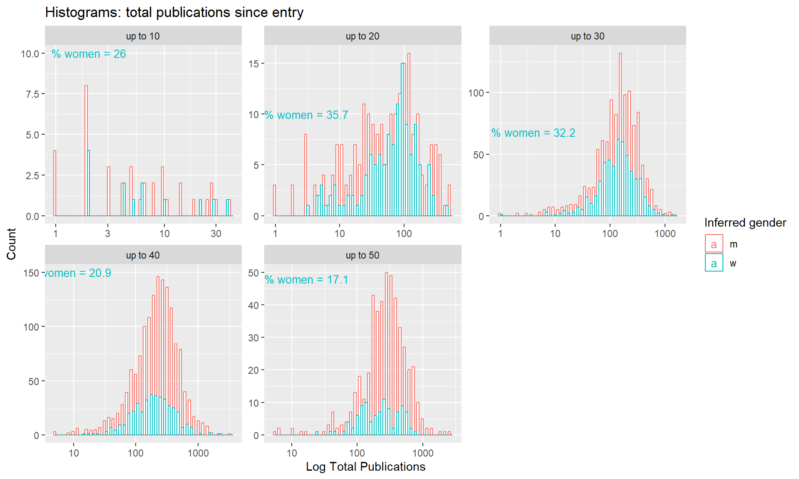
2. Citations
prof_panel_filter_plot %>%
filter(measure == "citations_total" & years_since_entry != "up to NA")%>%
ggplot(., aes(x=n, color=inferred_gender)) +
geom_histogram(fill="white", position="dodge",bins = 40)+
scale_x_log10()+
geom_text(data=count_profs, aes(x = c(rep(4, 2), rep(6, 2), rep(7.5, 2), rep(9, 2), rep(17.5, 2)),
y = c(rep(5, 2), rep(8, 2), rep(50, 2), rep(110, 2), rep(40, 2)),
label=label_gender),
size = 3.5)+
xlab("Log Total Citations")+
ylab("Count")+
labs(color='Inferred gender')+
ggtitle("Histograms: total citations since entry")+
facet_wrap(. ~ years_since_entry, nrow = 2, scales = "free")
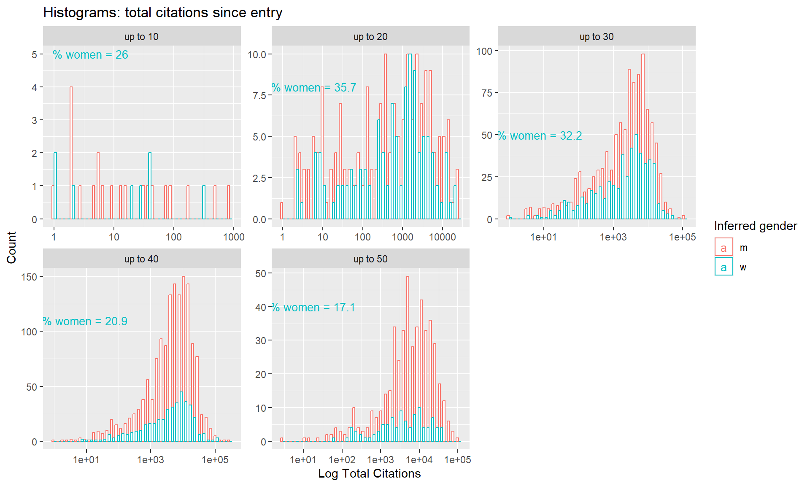
3. Lexis news sources
prof_panel_filter_plot %>%
filter(measure == "news_total" & years_since_entry != "up to NA")%>%
ggplot(., aes(x=n, color=inferred_gender)) +
geom_histogram(fill="white", position="dodge",bins = 40)+
scale_x_log10()+
geom_text(data=count_profs, aes(x = c(rep(5, 2), rep(3, 2), rep(4, 2), rep(4, 2), rep(3, 2)),
y = c(rep(5, 2), rep(7, 2), rep(45, 2), rep(80, 2), rep(30, 2)),
label=label_gender),
size = 3.5)+
xlab("Log Total Lexis Mentions")+
ylab("Count")+
labs(color='Inferred gender')+
ggtitle("Histograms: total Lexis mentions since entry")+
facet_wrap(. ~ years_since_entry, nrow = 2, scales = "free")
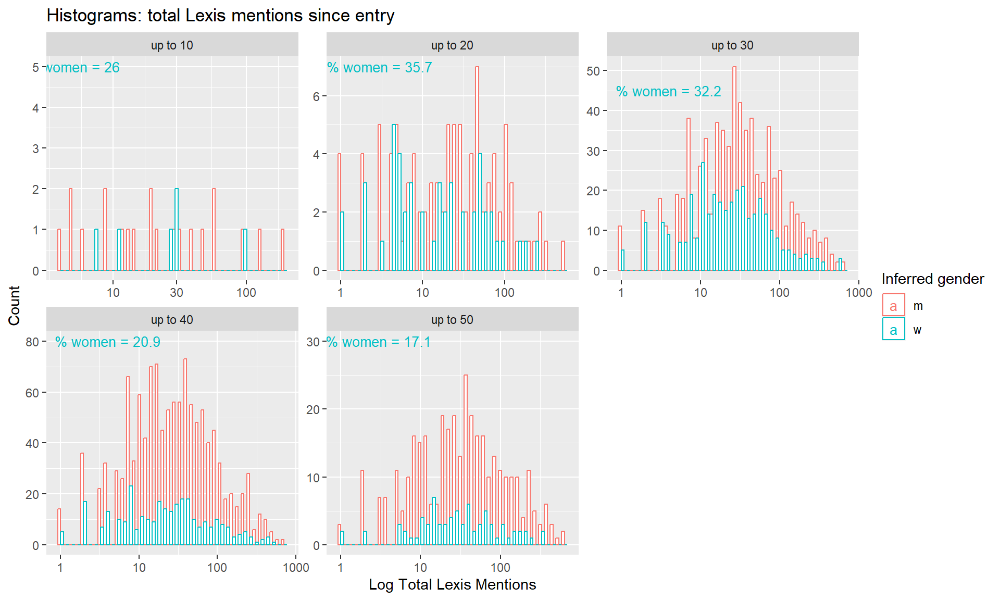
- Online news attention
prof_panel_filter_plot %>%
filter(measure == "online_news_total" & years_since_entry != "up to NA")%>%
ggplot(., aes(x=n, color=inferred_gender)) +
geom_histogram(fill="white", position="dodge",bins = 40)+
scale_x_log10()+
geom_text(data=count_profs, aes(x = c(rep(3, 2), rep(3.5, 2), rep(5, 2), rep(5, 2), rep(6, 2)),
y = c(rep(10, 2), rep(10, 2), rep(68, 2), rep(80, 2), rep(30, 2)),
label=label_gender),
size = 3.5)+
xlab("Log Total Online News Fetures")+
ylab("Count")+
labs(color='Inferred gender')+
ggtitle("Histograms: total online news mentions since entry")+
facet_wrap(. ~ years_since_entry, nrow = 2, scales = "free")
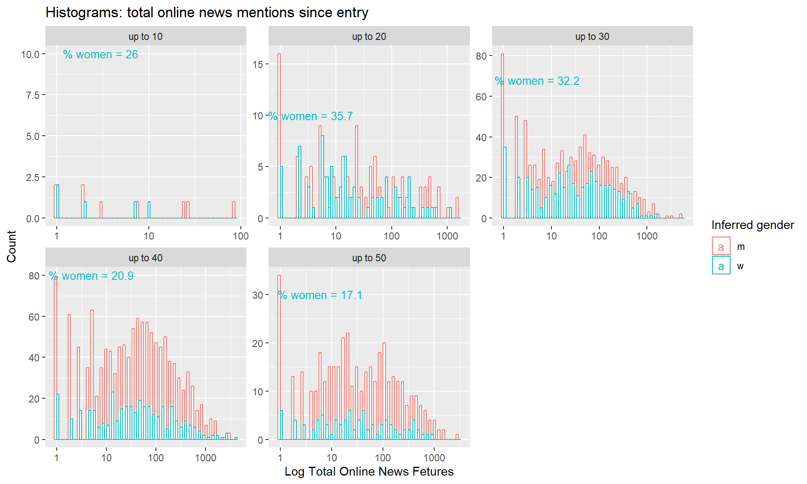
- Twitter attention
prof_panel_filter_plot %>%
filter(measure == "twitter_total" & years_since_entry != "up to NA")%>%
ggplot(., aes(x=n, color=inferred_gender)) +
geom_histogram(fill="white", position="dodge",bins = 40)+
scale_x_log10()+
geom_text(data=count_profs, aes(x = c(rep(35, 2), rep(4, 2), rep(6, 2), rep(6, 2), rep(6, 2)),
y = c(rep(5, 2), rep(5, 2), rep(20, 2), rep(45, 2), rep(15, 2)),
label=label_gender),
size = 3.5)+
xlab("Log Total Twitter Fetures")+
ylab("Count")+
labs(color='Inferred gender')+
ggtitle("Histograms: total twitter mentions since entry")+
facet_wrap(. ~ years_since_entry, nrow = 2, scales = "free")
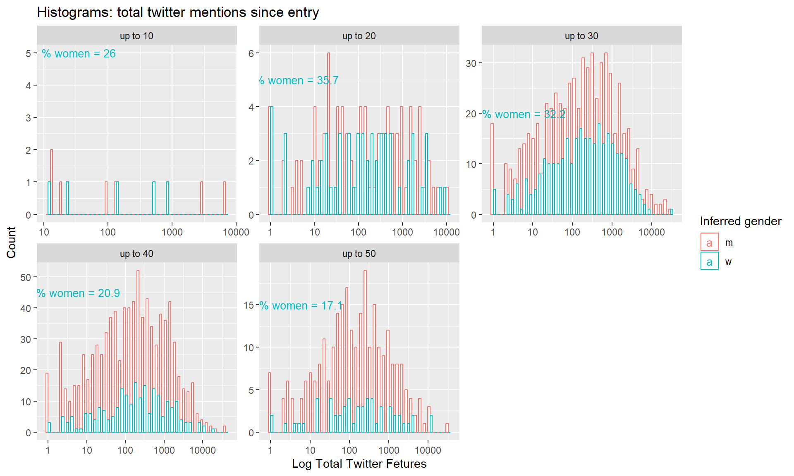
Field
Get women counts per year group to compare:
count_profs <- prof_panel_filter_plot %>%
filter(!is.na(general_field))%>%
group_by(inferred_gender, general_field)%>%
summarise(n_gender = n())
count_profs_2 <- prof_panel_filter_plot%>%
filter(!is.na(general_field))%>%
group_by(general_field)%>%
summarise(n_all = n())
count_profs <- merge(count_profs,
count_profs_2,
by = "general_field")
count_profs$share_gender <- round(count_profs$n_gender / count_profs$n_all * 100, 1)
count_profs$label_gender <- ifelse(count_profs$inferred_gender == "w", paste0("% women = ", count_profs$share_gender),
"")
Compare distributions between men and women:
- Publications
prof_panel_filter_plot %>%
filter(measure == "pubs_total" & years_since_entry != "up to NA" & !is.na(general_field))%>%
ggplot(., aes(x=n, color=inferred_gender)) +
geom_histogram(fill="white", position="dodge",bins = 40)+
scale_x_log10()+
geom_text(data=count_profs, aes(x = c(rep(6.5, 2), rep(5.5, 2), rep(4.5, 2), rep(5, 2)),
y = c(rep(18, 2), rep(75, 2), rep(86, 2), rep(120, 2)),
label=label_gender),
size = 3.5)+
xlab("Log Total Publications")+
ylab("Count")+
labs(color='Inferred gender')+
ggtitle("Histograms: total publications since entry")+
facet_wrap(general_field ~ ., ncol = 4, scales = "free")
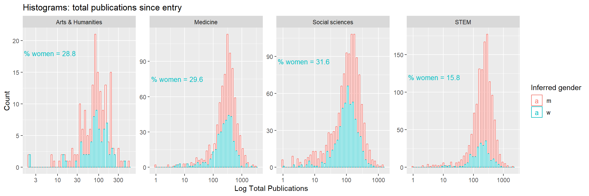
2. Citations
prof_panel_filter_plot %>%
filter(measure == "citations_total" & years_since_entry != "up to NA"& !is.na(general_field))%>%
ggplot(., aes(x=n, color=inferred_gender)) +
geom_histogram(fill="white", position="dodge",bins = 40)+
scale_x_log10()+
geom_text(data=count_profs, aes(x = c(rep(6.5, 2), rep(30, 2), rep(12, 2), rep(10, 2)),
y = c(rep(14, 2), rep(70, 2), rep(70, 2), rep(90, 2)),
label=label_gender),
size = 3.5)+
xlab("Log Total Citations")+
ylab("Count")+
labs(color='Inferred gender')+
ggtitle("Histograms: total citations since entry")+
facet_wrap(general_field ~ ., ncol = 4, scales = "free")
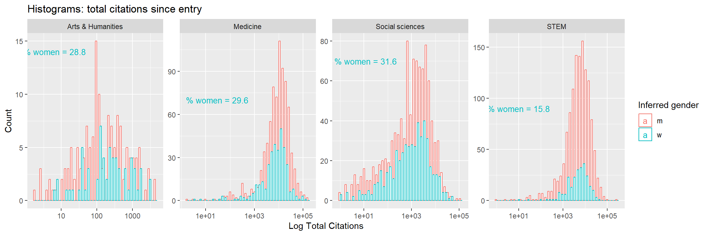
3. Lexis news sources
prof_panel_filter_plot %>%
filter(measure == "news_total" & years_since_entry != "up to NA"& !is.na(general_field))%>%
ggplot(., aes(x=n, color=inferred_gender)) +
geom_histogram(fill="white", position="dodge",bins = 40)+
scale_x_log10()+
geom_text(data=count_profs, aes(x = c(rep(4.5, 2), rep(4, 2), rep(4.5, 2), rep(4.5, 2)),
y = c(rep(12, 2), rep(40, 2), rep(50, 2), rep(50, 2)),
label=label_gender),
size = 3.5)+
xlab("Log Total Lexis Mentions")+
ylab("Count")+
labs(color='Inferred gender')+
ggtitle("Histograms: total Lexis mentions since entry")+
facet_wrap(general_field ~ ., ncol = 4, scales = "free")
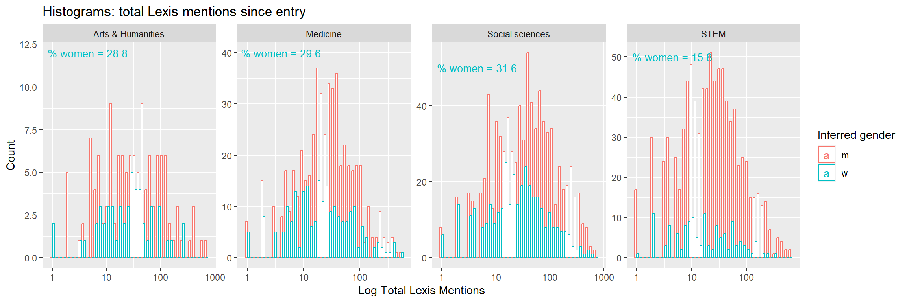
- Online news attention
prof_panel_filter_plot %>%
filter(measure == "online_news_total" & years_since_entry != "up to NA"& !is.na(general_field))%>%
ggplot(., aes(x=n, color=inferred_gender)) +
geom_histogram(fill="white", position="dodge",bins = 40)+
scale_x_log10()+
geom_text(data=count_profs, aes(x = c(rep(2.5, 2), rep(5.5, 2), rep(5, 2), rep(5, 2)),
y = c(rep(30, 2), rep(40, 2), rep(65, 2), rep(65, 2)),
label=label_gender),
size = 3.5)+
xlab("Log Total Online News Fetures")+
ylab("Count")+
labs(color='Inferred gender')+
ggtitle("Histograms: total online news mentions since entry")+
facet_wrap(general_field ~ ., ncol = 4, scales = "free")
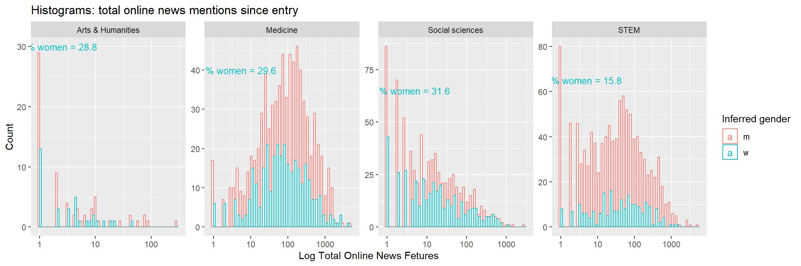
- Twitter attention
prof_panel_filter_plot %>%
filter(measure == "twitter_total" & years_since_entry != "up to NA"& !is.na(general_field))%>%
ggplot(., aes(x=n, color=inferred_gender)) +
geom_histogram(fill="white", position="dodge",bins = 40)+
scale_x_log10()+
geom_text(data=count_profs, aes(x = c(rep(4, 2), rep(7, 2), rep(7, 2), rep(7, 2)),
y = c(rep(10, 2), rep(25, 2), rep(25, 2), rep(35, 2)),
label=label_gender),
size = 3.5)+
xlab("Log Total Twitter Fetures")+
ylab("Count")+
labs(color='Inferred gender')+
ggtitle("Histograms: total twitter mentions since entry")+
facet_wrap(general_field ~ ., ncol = 4, scales = "free")
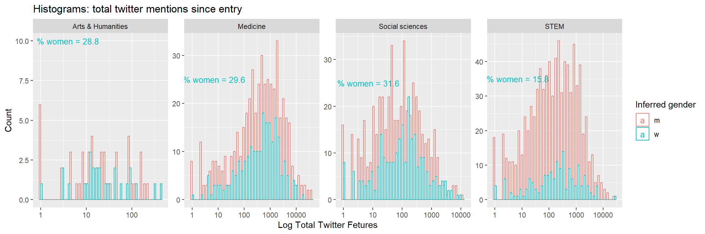
CDF Plots
Plotting the CDFs:
ggplot(prof_panel_filter_plot, aes(x = n, col = measure),log='x')+
stat_ecdf(lwd = 1.2)+
scale_x_log10()+
xlab("Log(n)")+
ylab("ECDF")
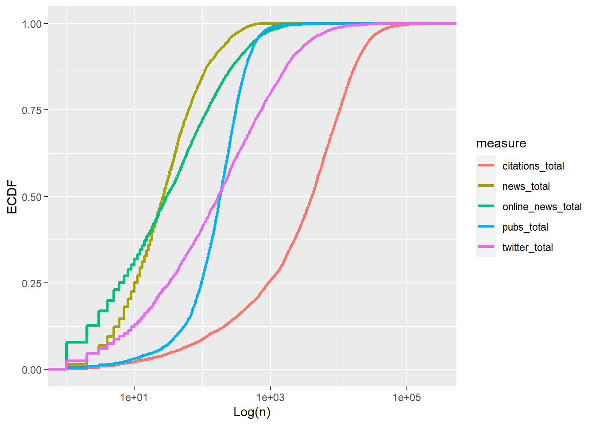
Break this down by gender:
cols_of_interest <- c("pubs_total", "citations_total",
"news_total", "online_news_total",
"twitter_total")
titles <- c("Total Publications",
"Total Citations",
"Total Lexis mentions",
"Total Online News mentions",
"Total Twitter mentions")
cdf_plots <- list()
for (i in 1:length(cols_of_interest)){
data <- filter(prof_panel_filter_plot,
measure == cols_of_interest[i])
plotje <- ggplot(data, aes(x = n, col = inferred_gender),log='x')+
stat_ecdf(lwd = 1.2)+
scale_x_log10()+
xlab("Log(n)")+
ylab("ECDF")+
ggtitle(titles[i])+
scale_color_manual(values=c("w" = "#E69F00", "m"= "#56B4E9"))+
theme_minimal()
cdf_plots[[i]] <- plotje
}
Plot the CDFs next to each other:
legend <- get_legend(
# create some space to the left of the legend
cdf_plots[[1]]
)
(cowplot::plot_grid(cdf_plots[[1]] + theme(legend.position="none"),
cdf_plots[[2]] + theme(legend.position="none"),
cdf_plots[[3]] + theme(legend.position="none"),
cdf_plots[[4]] + theme(legend.position="none"),
cdf_plots[[5]] + theme(legend.position="none"),
legend,
ncol = 2))
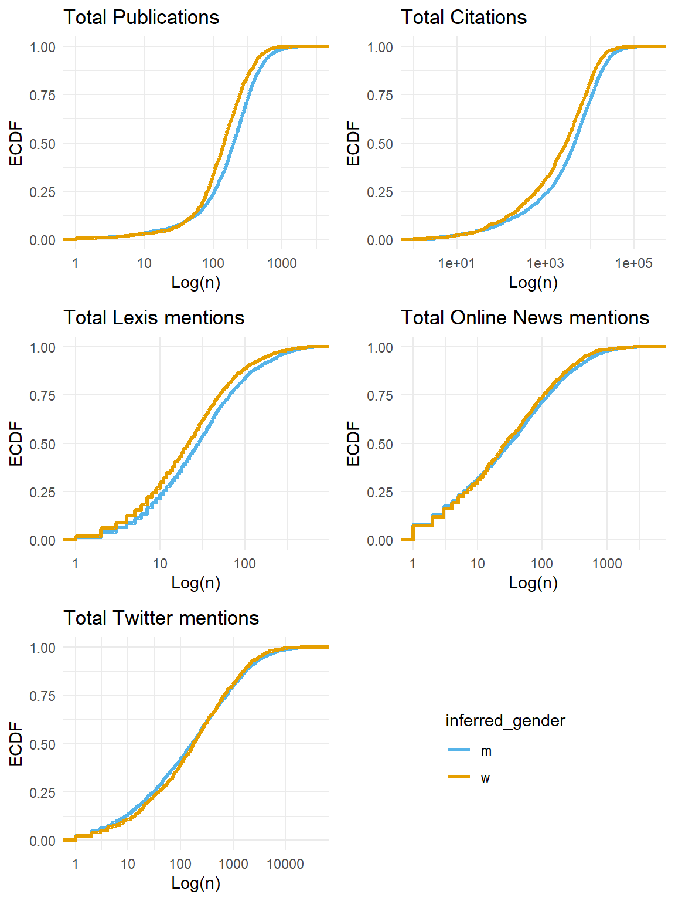
## Log-log plots
Log-log of the
frequency distribution
cols_of_interest <- c("pubs_total", "citations_total",
"news_total", "online_news_total",
"twitter_total")
titles <- c("Total Publications",
"Total Citations",
"Total Lexis mentions",
"Total Online News mentions",
"Total Twitter mentions")
plotting_all <- data.frame(matrix(NA, ncol = 4, nrow = 0))
colnames(plotting_all) <- c("x", "pk", "k", "measure")
for (i in 1:length(cols_of_interest)){
column_of_interest <- cols_of_interest[i]
# organize data into a df
x <- filter(prof_panel_filter, !is.na(get(column_of_interest)))
x <- x[[column_of_interest]]
x <- sort(x, decreasing = TRUE)
plotting_df <- data.frame(x = x,
pk <- 1-ecdf(x)(x),
k <- seq_along(x))
plotting_df$measure <- column_of_interest
colnames(plotting_df) <- c("x", "pk", "k", "measure")
plotting_all <- rbind(plotting_all,
plotting_df)
}
Here is the plot:
plotting_all %>%
ggplot(aes(x=x, y = pk, color = measure, group = measure)) + geom_point(alpha=0.2)+
scale_x_log10()+
scale_y_log10()+
ylab("Proportion of profs")+
xlab("Number")
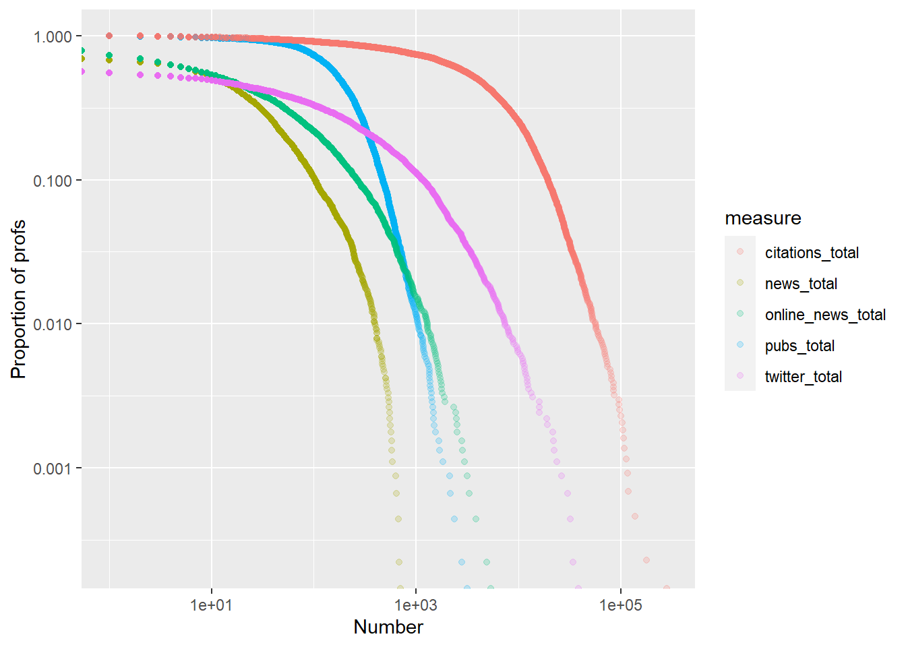
Fitting different
distributions
cols_of_interest <- c("pubs_total", "citations_total",
"news_total", "online_news_total",
"twitter_total")
titles <- c("Total Publications",
"Total Citations",
"Total Lexis mentions",
"Total Online News mentions",
"Total Twitter mentions")
power_law_plots <- list()
p_values <- list()
for (i in 1:length(cols_of_interest)){
column_of_interest <- cols_of_interest[i]
# organize data into a df
x <- filter(prof_panel_filter, !is.na(get(column_of_interest)))
x <- x[[column_of_interest]]
x <- x[!is.na(x)]
x <- x[x != 0]
# fit a power law distribution
pl_est <- displ$new(x)
pl_est$setXmin(estimate_xmin(pl_est))
#pl_est$setXmin(1)
pl_est$setPars(estimate_pars(pl_est))
# fit log-normal model
ln_est <- dislnorm$new(x)
ln_est$setXmin(pl_est$getXmin())
ln_est$setPars(estimate_pars(ln_est))
# compare the distributions
comp = compare_distributions(pl_est, ln_est)
p_values[[i]] <- comp$p_two_sided
plot.new() ## clean up device
## Plot the data (from xmin)
plot(pl_est, ylab = "CDF", xlab = "n", main=titles[i])
## Add in the fitted distribution
lines(pl_est, col = 2)
lines(ln_est, col = 3)
p <- recordPlot()
power_law_plots[[i]] <- p
}
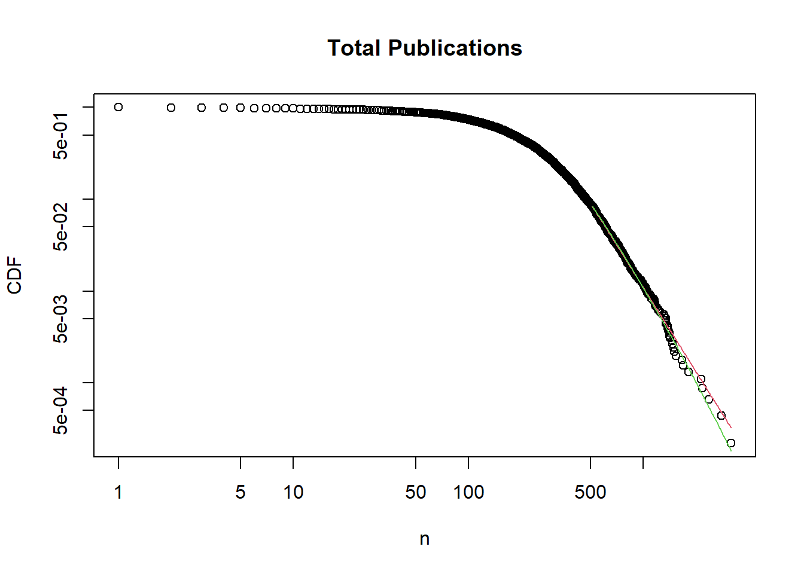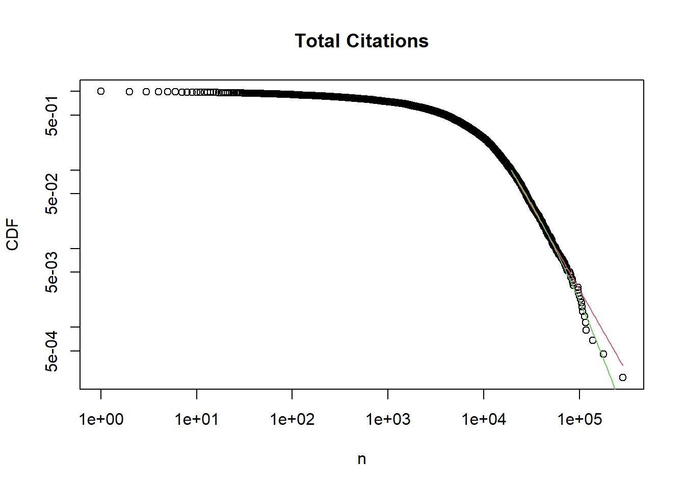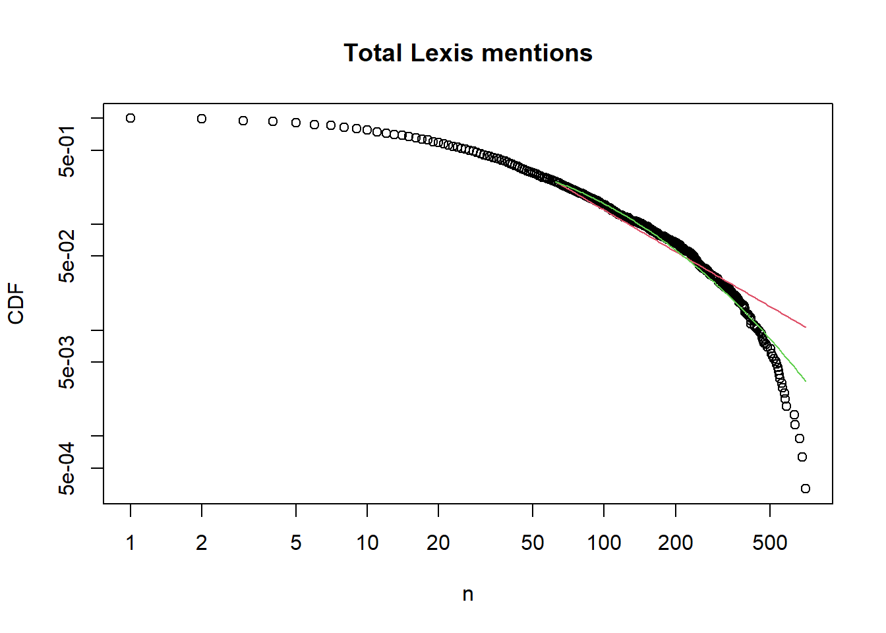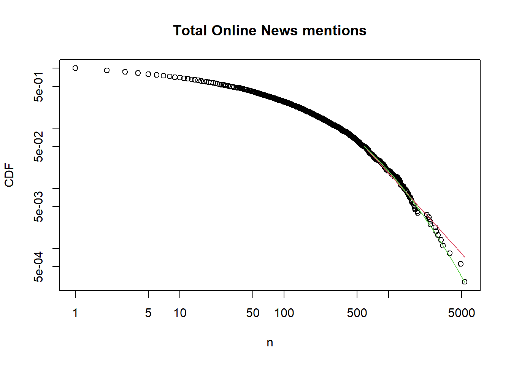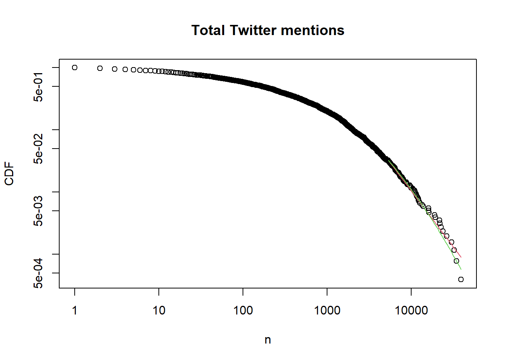
plot.new()
for (i in 1:length(power_law_plots)){
plot <- power_law_plots[[i]]
#plot.new()
print(plot)
}
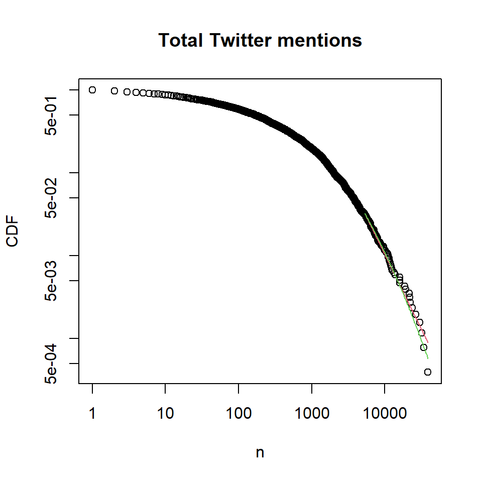
p_values
## [[1]]
## [1] 0.5429114
##
## [[2]]
## [1] 0.2343458
##
## [[3]]
## [1] 7.449671e-08
##
## [[4]]
## [1] 0.2454641
##
## [[5]]
## [1] 0.4801399
Share women as in the
PNAS paper
Get the top 25/15/5/1% per field:
top_25_field <- prof_panel_filter_plot %>%
group_by(general_field, measure)%>%
filter(quantile(n, 0.75, na.rm = TRUE)<n)%>%
select(general_field,profile_id, measure)
top_25_field$top_25 <- "yes"
prof_panel_filter_plot_top <- merge(prof_panel_filter_plot,
top_25_field,
by = c("general_field", "profile_id", "measure"),
all.x = TRUE)
prof_panel_filter_plot_top$top_25 <- ifelse(is.na(prof_panel_filter_plot_top$top_25),
"no",
prof_panel_filter_plot_top$top_25)
top_15_field <- prof_panel_filter_plot %>%
group_by(general_field, measure)%>%
filter(quantile(n, 0.85, na.rm = TRUE)<n)%>%
select(general_field,profile_id, measure)
top_15_field$top_15 <- "yes"
prof_panel_filter_plot_top <- merge(prof_panel_filter_plot_top,
top_15_field,
by = c("general_field", "profile_id", "measure"),
all.x = TRUE)
prof_panel_filter_plot_top$top_15 <- ifelse(is.na(prof_panel_filter_plot_top$top_15),
"no",
prof_panel_filter_plot_top$top_15)
top_5_field <- prof_panel_filter_plot %>%
group_by(general_field, measure)%>%
filter(quantile(n, 0.95, na.rm = TRUE)<n)%>%
select(general_field,profile_id, measure)
top_5_field$top_5 <- "yes"
prof_panel_filter_plot_top <- merge(prof_panel_filter_plot_top,
top_5_field,
by = c("general_field", "profile_id", "measure"),
all.x = TRUE)
prof_panel_filter_plot_top$top_5 <- ifelse(is.na(prof_panel_filter_plot_top$top_5),
"no",
prof_panel_filter_plot_top$top_5)
top_1_field <- prof_panel_filter_plot %>%
group_by(general_field, measure)%>%
filter(quantile(n, 0.99, na.rm = TRUE)<n)%>%
select(general_field,profile_id, measure)
top_1_field$top_1 <- "yes"
prof_panel_filter_plot_top <- merge(prof_panel_filter_plot_top,
top_1_field,
by = c("general_field", "profile_id", "measure"),
all.x = TRUE)
prof_panel_filter_plot_top$top_1 <- ifelse(is.na(prof_panel_filter_plot_top$top_1),
"no",
prof_panel_filter_plot_top$top_1)
% of women among
all profs
Share of women in general
# share women per measure
top_field_s_w <- prof_panel_filter_plot_top %>%
filter(!is.na(general_field))%>%
group_by(general_field, measure)%>%
summarise(count = sum(n, na.rm = TRUE),
n_w = sum(n[inferred_gender == "w"], na.rm = TRUE))%>%
mutate(share_w = round(n_w / count, 3)*100)
# share women in per field
s_w_overall <- prof_panel_filter_plot %>%
filter(!is.na(general_field))%>%
group_by(general_field)%>%
summarise(count = n(),
n_w = sum(inferred_gender == "w"))%>%
mutate(share_w = round(n_w / count, 3)*100)
s_w_overall$measure <- "overall"
s_w_overall <- s_w_overall[colnames(top_field_s_w)]
# merge
top_field_s_w <- rbind(top_field_s_w,
s_w_overall)
colnames(s_w_overall)[5] <- "share_w_overall"
top_field_s_w <- merge(top_field_s_w,
s_w_overall[c("general_field", "share_w_overall")],
by = "general_field")
top_field_s_w$share_w_overall[c(2:6, 8:12, 14:18, 20:24)] <- NA
Plot this out:
top_field_s_w$measure <- factor(top_field_s_w$measure,
levels = c("overall",
"pubs_total",
"citations_total",
"news_total",
"online_news_total",
"twitter_total"))
repr_all <- top_field_s_w %>%
filter(measure != "overall")%>%
ggplot(aes(y=share_w, x=general_field)) +
geom_point(aes(shape=measure, color=measure), position=position_dodge(width=0.2), stat="identity")+
geom_bar(stat="identity", aes(y=share_w_overall, x=general_field), alpha=0.2, width = 0.2)+
guides(fill = guide_legend(reverse=TRUE, title = "Measure"))+
coord_flip()+
xlab("Field")+
ylab("% Women")+
ggtitle("% of women compared to their share \namong professors")+
theme(plot.title = element_text(size = 10))
% of women in top
n% of profs
Now, look at the share of women per top n:
plotting_list <- c("top_25", "top_15", "top_5", "top_1")
for (top in plotting_list){
# share women per measure
top_n_field_s_w <- prof_panel_filter_plot_top %>%
filter(!is.na(general_field))%>%
filter(!!as.symbol(top) == "yes")%>%
group_by(general_field, measure)%>%
summarise(n = n(),
n_w = sum(inferred_gender == "w"))%>%
mutate(share_w = round(n_w / n, 3)*100)
# share women in per field
s_w_overall <- prof_panel_filter_plot_top %>%
filter(!is.na(general_field))%>%
group_by(general_field)%>%
summarise(n = n(),
n_w = sum(inferred_gender == "w"))%>%
mutate(share_w = round(n_w / n, 3)*100)
s_w_overall$measure <- "overall"
s_w_overall <- s_w_overall[colnames(top_n_field_s_w)]
# merge
top_n_field_s_w <- rbind(top_n_field_s_w,
s_w_overall)
colnames(s_w_overall)[5] <- "share_w_overall"
top_n_field_s_w <- merge(top_n_field_s_w,
s_w_overall[c("general_field", "share_w_overall")],
by = "general_field")
top_n_field_s_w$share_w_overall[c(2:6, 8:12, 14:18, 20:24)] <- NA
top_n_field_s_w$measure <- factor(top_n_field_s_w$measure,
levels = c("overall",
"pubs_total",
"citations_total",
"news_total",
"online_news_total",
"twitter_total"))
repr_top_n <- top_n_field_s_w %>%
filter(measure != "overall")%>%
ggplot(aes(y=share_w, x=general_field)) +
geom_point(aes(shape=measure, color=measure), position=position_dodge(width=0.2), stat="identity")+
geom_bar(stat="identity", aes(y=share_w_overall, x=general_field), alpha=0.2, width = 0.2)+
guides(fill = guide_legend(reverse=TRUE, title = "Measure"))+
coord_flip()+
xlab("Field")+
ylab("% Women")+
ggtitle(paste0("% of women among top ", str_remove(top,"top_"), "% profs per measure \ncompared to their share among professors"))+
theme(plot.title = element_text(size = 10))
assign(paste0("repr_", top), repr_top_n)
}
Plot this out:
legend <- get_legend(
# create some space to the left of the legend
repr_all
)
(cowplot::plot_grid(repr_all + theme(legend.position="none"),
repr_top_25 + theme(legend.position="none",
axis.title.y=element_blank(),
axis.text.y=element_blank()),
repr_top_15 + theme(legend.position="none",
axis.title.y=element_blank(),
axis.text.y=element_blank()),
repr_top_5 + theme(legend.position="none"),
repr_top_1 + theme(legend.position="none",
axis.title.y=element_blank(),
axis.text.y=element_blank()),
legend,
ncol = 3,
rel_widths = c(1, 0.75, 0.75)))
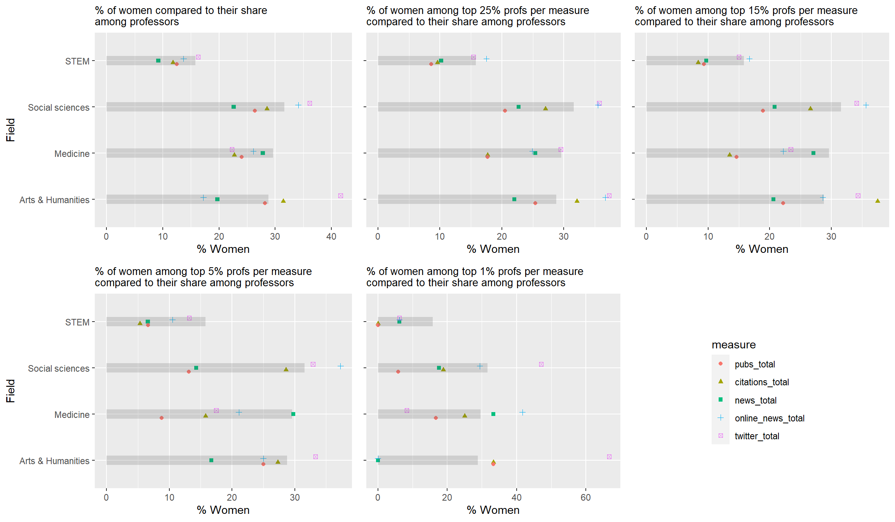
# I'm such an artist :D
PAPER-BASED
port <- 5432
user <- "postgres"
password <- "dutchmediaprofssql"
database_name <- "postgres"
con <- RPostgres::dbConnect(RPostgres::Postgres(),
dbname= database_name,
port = port,
user = user,
password = password)
Load different types of attention:
pub_news <- dbReadTable(con, "altmetric_pub_att_news")
pub_blogs <- dbReadTable(con, "altmetric_pub_att_blogs")
twitter_attn <- dbGetQuery(con, statement = "select * from altmetric_prof_attention where \"mention_type\"='tweet'")
lexis_data <- dbReadTable(con, "lexis_nexis_mentions")
prof_gender <- dbReadTable(con, "gender_table")
# get single authored papers
# loading the paper info
oa_pubs_unique <- dbReadTable(con, "oa_prof_pubs_unique")
#prof - pub matching
oa_prof_pub_matching <- dbReadTable(con, "oa_prof_pub_match")
# prof unique pub list
oa_prof_pubs_unique <- merge(oa_pubs_unique,
oa_prof_pub_matching[c("id", "au_id", "au_display_name", "profile_id")],
all.x = TRUE,
all.y = TRUE,
by = "id")
coauthor_info <- dbGetQuery(con, "select \"id\", \"au_id\" FROM oa_coauthor_info;")
oa_prof_pubs_unique_single_au <- filter(oa_prof_pubs_unique,
! id %in% coauthor_info$id)
Merge lexis and twitter data with gender:
lexis_data <- merge(lexis_data,
prof_gender[c("profile_id", "inferred_gender")],
by = "profile_id")
twitter_attn <- merge(twitter_attn,
prof_gender[c("profile_id", "inferred_gender")],
by = "profile_id")
Tidy up the attention sources:
# merge the papers with their authors
attention_news_profs <- merge(pub_news,
oa_prof_pub_matching[c("id", "profile_id")],
by = "id")
# merge the papers with their authors
attention_blogs_profs <- merge(pub_blogs,
oa_prof_pub_matching[c("id", "profile_id")],
by = "id")
# get a year from the "posted on" string
attention_news_profs$year <- year(as_date(attention_news_profs$posted_on))
attention_blogs_profs$year <- year(as_date(attention_blogs_profs$posted_on))
# merge these two together
online_news_blogs <- rbind(attention_news_profs[c("id", "title", "url", "posted_on", "summary",
"author_name", "author_url", "profile_id", "year" )],
attention_blogs_profs[c("id", "title", "url", "posted_on", "summary",
"author_name", "author_url", "profile_id", "year" )])
online_news_blogs <- merge(online_news_blogs,
prof_gender[c("profile_id", "inferred_gender")],
by = "profile_id")
Get professor gender as well as their main field:
# fetch the topics
oa_pubs_topics <- dbReadTable(con, "oa_pubs_topics")
oa_pubs_topics <- merge(oa_prof_pub_matching,
oa_pubs_topics,
by = "id",
all.x = TRUE)
oa_pubs_topics <- merge(oa_pubs_topics,
oa_pubs_unique[c("id", "publication_year")],
by = "id")
# and get the fields
prof_total_field <- oa_pubs_topics %>%
group_by(profile_id, field_display_name) %>%
summarise(n = n())%>%
slice_max(n, with_ties = FALSE)%>%
select(-n)
colnames(prof_total_field)[2] <- c("overall_field" )
# recode the fields
prof_total_field <- prof_total_field %>%
mutate(general_field = case_match(
overall_field,
"Arts and Humanities" ~ "Arts & Humanities",
c("Biochemistry, Genetics and Molecular Biology","Agricultural and Biological Sciences",
"Chemical Engineering", "Chemistry", "Computer Science", "Decision Sciences",
"Earth and Planetary Sciences", "Energy", "Engineering", "Environmental Science",
"Immunology and Microbiology", "Materials Science", "Mathematics", "Neuroscience",
"Physics and Astronomy" ) ~ "STEM",
c("Dentistry", "Health Professions", "Medicine") ~ "Medicine",
c("Business, Management and Accounting", "Economics, Econometrics and Finance",
"Psychology", "Social Sciences") ~ "Social sciences"))
Merge attention and field:
online_news_blogs <- merge(online_news_blogs,
prof_total_field[c("profile_id", "general_field")],
by = "profile_id")
# denote if single-authored paper
online_news_blogs$single_au <- ifelse(online_news_blogs$id %in% oa_prof_pubs_unique_single_au$id, "yes", "no")
lexis_data <- merge(lexis_data,
prof_total_field[c("profile_id", "general_field")],
by = "profile_id")
twitter_attn <- merge(twitter_attn,
prof_total_field[c("profile_id", "general_field")],
by = "profile_id")
Gender inequality for single authored papers:
online_att_all <- online_news_blogs %>%
group_by(inferred_gender, general_field)%>%
summarise(all_attn = n())%>%
group_by(general_field)%>%
mutate(share_attn = all_attn/sum(all_attn))
colnames(online_att_all)[2] <- "general_field"
share_prof_field <- merge(prof_gender,
prof_total_field,
by = "profile_id")%>%
filter(!is.na(general_field))%>%
group_by(inferred_gender, general_field)%>%
summarise(all_prof = n())%>%
group_by(general_field)%>%
mutate(share_prof = all_prof/sum(all_prof))
online_att_all <- merge(online_att_all,
share_prof_field,
by= c("inferred_gender", "general_field"))
online_att_all_avg <- online_news_blogs %>%
group_by(profile_id, inferred_gender, general_field)%>%
summarise(count = n())%>%
group_by(inferred_gender, general_field)%>%
summarise(mean_n = mean(count, na.rm = TRUE),
sd = sd(count, na.rm = TRUE),
n = n()) %>%
mutate(se = sd / sqrt(n),
lower.ci = mean_n - qt(1 - (0.05 / 2), n - 1) * se,
upper.ci = mean_n + qt(1 - (0.05 / 2), n - 1) * se)
online_att_single <- online_news_blogs %>%
filter(single_au == "yes")%>%
group_by(inferred_gender, general_field)%>%
summarise(all_attn = n())%>%
group_by(general_field)%>%
mutate(share = all_attn/sum(all_attn))
colnames(online_att_single)[2] <- "general_field"
online_att_single <- merge(online_att_single,
share_prof_field,
by= c("inferred_gender", "general_field"))
online_att_single_avg <- online_news_blogs %>%
filter(single_au == "yes")%>%
group_by(profile_id, inferred_gender, general_field)%>%
summarise(count = n())%>%
group_by(inferred_gender, general_field)%>%
summarise(mean_n = mean(count, na.rm = TRUE),
sd = sd(count, na.rm = TRUE),
n = n()) %>%
mutate(se = sd / sqrt(n),
lower.ci = mean_n - qt(1 - (0.05 / 2), n - 1) * se,
upper.ci = mean_n + qt(1 - (0.05 / 2), n - 1) * se)
Plot average attention counts: 1. Overall
Shares
share_attn_all <- online_att_all %>%
ggplot(aes(x=as.factor(general_field))) +
geom_bar(aes(y=share_attn, fill = as.factor(inferred_gender)), position = position_dodge(width = 0.9), stat="identity", alpha=0.7)+
geom_point(aes(y=share_prof, color = as.factor(inferred_gender)), position = position_dodge(width = 0.9))
Averages
avg_attn_all <-online_att_all_avg %>%
ggplot(aes(x=as.factor(general_field), y=mean_n)) +
geom_bar(aes(fill = as.factor(inferred_gender)), position = position_dodge(width = 0.9), stat="identity", alpha=0.7)+
geom_errorbar(aes(x=as.factor(general_field), ymin=lower.ci, ymax=upper.ci, group = inferred_gender), width=0.1, alpha=0.9, size=0.6, position=position_dodge(1))
- Single author:
Shares:
share_attn_single <-online_att_single %>%
ggplot(aes(x=as.factor(general_field))) +
geom_bar(aes(y=share, fill = as.factor(inferred_gender)), position = position_dodge(width = 0.9), stat="identity", alpha=0.7)+
geom_point(aes(y=share_prof, color = as.factor(inferred_gender)), position = position_dodge(width = 0.9))
Averages:
avg_attn_single <- online_att_single_avg %>%
ggplot(aes(x=as.factor(general_field), y=mean_n)) +
geom_bar(aes(fill = as.factor(inferred_gender)), position = position_dodge(width = 0.9), stat="identity", alpha=0.7)+
geom_errorbar(aes(x=as.factor(general_field), ymin=lower.ci, ymax=upper.ci, group = inferred_gender), width=0.1, alpha=0.9, size=0.6, position=position_dodge(1))
Shares of attention combined:
legend <- get_legend(
# create some space to the left of the legend
share_attn_all+ guides(fill=guide_legend(title="Share attention"),
color=guide_legend(title="Share professors"))
)
cowplot::plot_grid(share_attn_all + ggtitle("Attn. to all papers")+ theme(legend.position="none")+ylab("Share")+xlab("Field"),
share_attn_single + ggtitle("Attn. to single author papers")+xlab("Field")+ theme(legend.position="none")+ylab("Share"),
legend,
rel_widths = c(1, 1, 0.3),
nrow = 1)
 Average mentions combined:
Average mentions combined:
legend <- get_legend(
# create some space to the left of the legend
avg_attn_all+ guides(fill=guide_legend(title="Average attention"))
)
cowplot::plot_grid(avg_attn_all + ggtitle("Avg. mentions - all papers")+ theme(legend.position="none")+ylab("Share")+xlab("Field"),
avg_attn_single + ggtitle("Avg. mentions - single author papers")+xlab("Field")+ theme(legend.position="none")+ylab("Share")+ylim(0,25),
legend,
rel_widths = c(1, 1, 0.3),
nrow = 1)
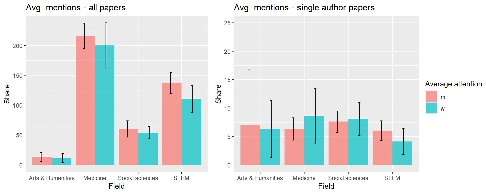
